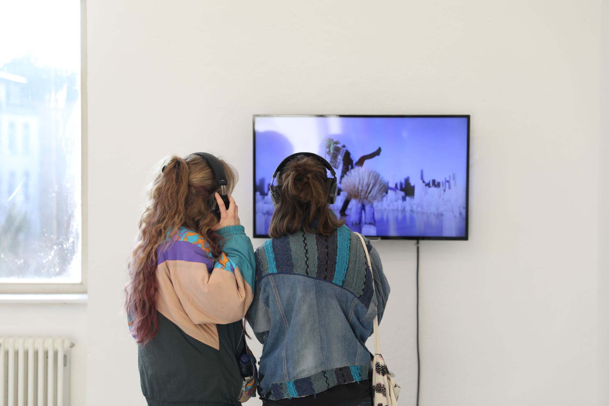
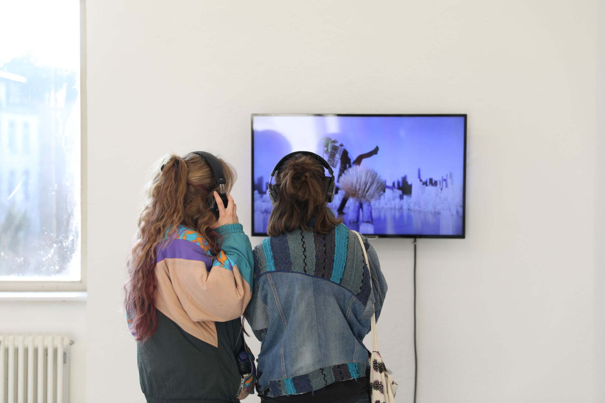

Intermezzo of Elysian Chants is a 5 minute animated video depicting the European Central Bank transforming into a towering humanoid banker giant. The giant performs a choreography to a chopped and screwed version of "Der Räuber und der Prinz" by DAF, summoning glowing green arrows that shoot upward around him.
A smaller character, an intern, enters and dances to a slowed theme from "Peter and the Wolf". The intern hands the giant an Apple Pencil, which the giant uses to sign in the air. The giant then presses a button on the intern’s chest, revealing a coffee machine built into his back, which the giant operates to make coffee. The giant walks forward but becomes stuck on a piece of gum on the ground.
The entire scene is animated by me with sound created by Amar Halilovic.

 
